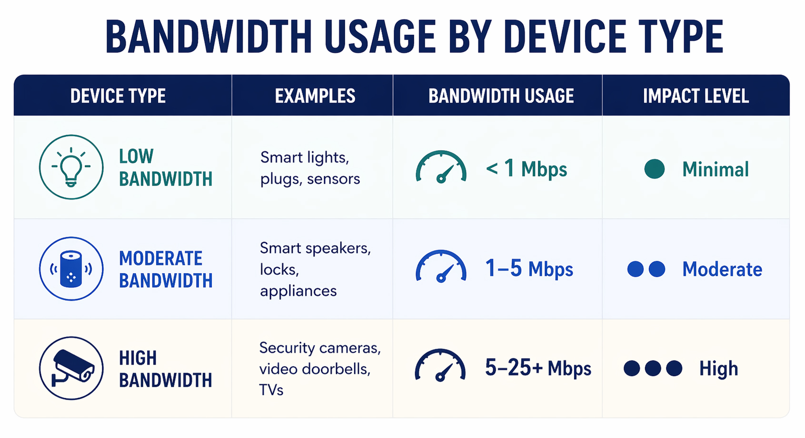
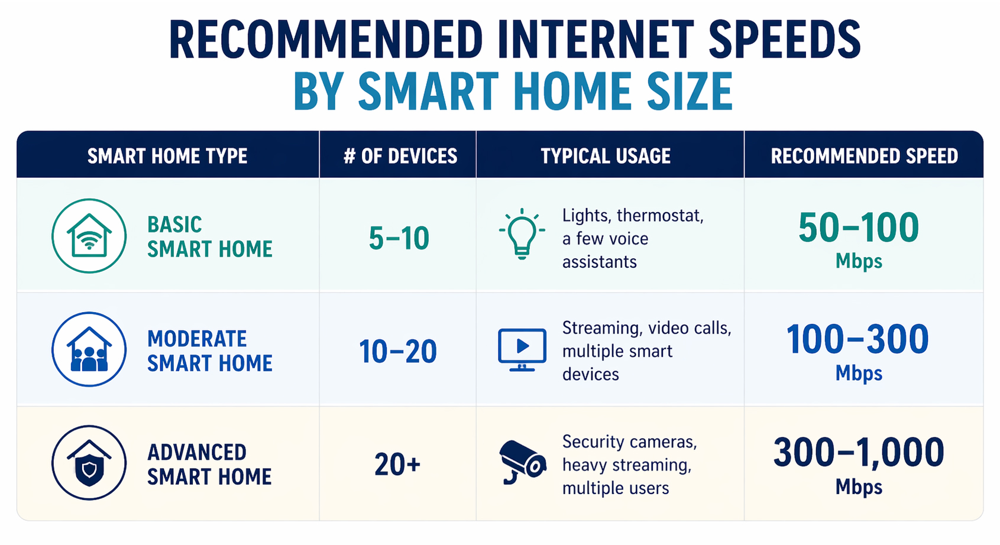
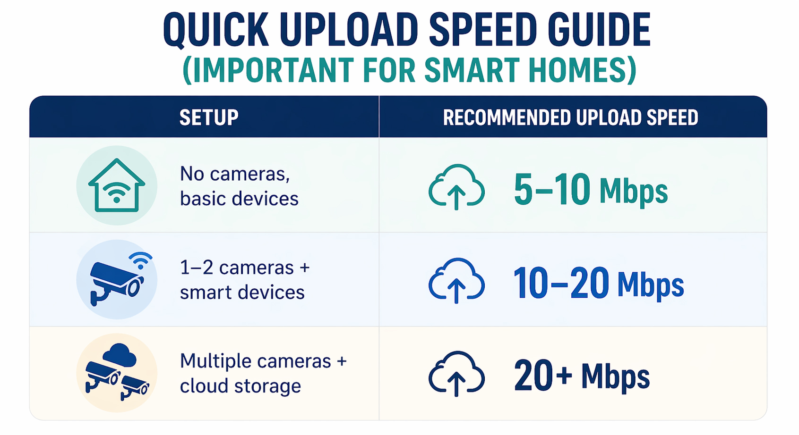

Smart devices can add a new level of convenience and enjoyment at home. But how much bandwidth do they actually need? Today we are answering the question.
The Short Answer
Most smart homes run comfortably on 100–300 Mbps, but the right speed depends on how many devices you have, what they do, and how many people are online at once. A home with just a few smart speakers and lights won’t need nearly as much bandwidth as one packed with cameras, streaming devices, and connected appliances.
Why Smart Homes Use More Bandwidth
Every connected device in your home shares your internet connection. While many smart devices use small amounts of data individually, they add up quickly when running simultaneously.
Here’s what drives bandwidth usage:
- • Number of devices connected at once
- • Type of activity (streaming vs. simple commands)
- • Simultaneous usage (multiple users, video calls, gaming, etc.)
Bandwidth by Device Type
Not all smart devices are created equal. Some use very little data, while others—especially those involving video—can be bandwidth-hungry.
Low Bandwidth Devices (Minimal Impact):
- • Smart lights
- • Smart plugs
- • Smart thermostats
- • Door/ window sensors
These devices typically use less than 1 Mbps and only transmit small bursts of data.
Moderate Bandwidth Devices:
- • Smart speakers
- • Voice assistants
- • Smart locks
- • Smart appliances
These usually require 1–5 Mbps, depending on usage.
High Bandwidth Devices:
- • Security cameras (especially HD/4K)
- • Video doorbells
These can use anywhere from 5–25+ Mbps per device, especially when streaming or recording continuously.
Refer to below chart for a quick review.

How Many Devices Are Too Many?
The average household now has 10–25 connected devices, and that number is growing fast. A smart home with cameras, TVs, phones, laptops, and IoT devices can easily exceed 30 connections.
If multiple devices are streaming, recording video, or running at the same time, your network can slow down without enough bandwidth.
Recommended Speeds by Home Type
Basic Smart Home (5–10 devices):
- • Recommended speed: 50–100 Mbps
- • Ideal for light usage and minimal streaming
Moderate Smart Home (10–20 devices):
- • Recommended speed: 100–300 Mbps
- • Good for streaming, video calls, and several smart devices
Advanced Smart Home (20+ devices):
- • Recommended speed: 300–1,000 Mbps (1 Gbps)
- • Best for heavy streaming, security systems, and multiple users

Don’t Forget About Upload Speed
Download speed gets all the attention, but upload speed is just as important—especially for smart homes.
Devices like security cameras and video doorbells constantly upload data to the cloud.If your upload speed is too low, you may experience:
- • Lag in video feeds
- • Delayed alerts
- • Poor video quality
A good rule of thumb is to have at least 10–20 Mbps upload speed for homes with multiple cameras.

Wi-Fi Matters as Much as Speed
Even with fast internet, poor Wi-Fi can cause problems. Dead zones, weak signals, and overloaded routers can limit performance.
To get the most out of your smart home:
- • Use a modern router (Wi-Fi 6 or newer)
- • Consider a mesh Wi-Fi system for larger homes
- • Place your router in a central location
- • Limit interference from walls and electronics
Smart homes are only getting smarter. As more devices become connected—and more data-heavy—it’s wise to choose an internet plan that gives you room to grow
Upgrading your speed now can prevent headaches later as you add new devices like cameras, smart appliances, or whole-home automation systems.
There’s no one-size-fits-all answer, but most households will find that 100–300 Mbps offers a smooth smart home experience. If your home relies heavily on streaming, security cameras, or multiple users, higher speeds are worth the investment.
Ultimately, the best internet speed is one that keeps everything running seamlessly—so your smart home feels effortless, not frustrating.